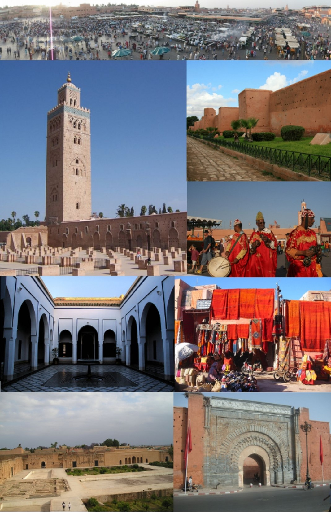
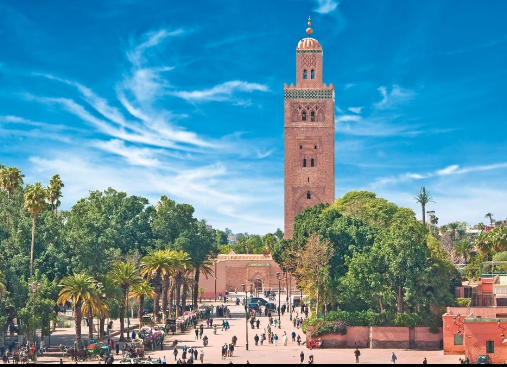

BIENVENUE A MARRAKECH
MARRAKECH
Marrakech, ancienne cité impériale de l'ouest du Maroc, et un centre économique majeur abritant des mosquées, des palais et
des jardins. Symbole de la ville, le minaret de la mosquée maure de Koutoubia du XIIe siècle est visible à des kilomètres.


La place Jemaa el-Fna
est une célèbre place publique au sud-ouest de la médina de Marrakech au Maroc. Ce haut-lieu
traditionnel, populaire et animé notamment la nuit attire plus d'un million de visiteurs chaque année.